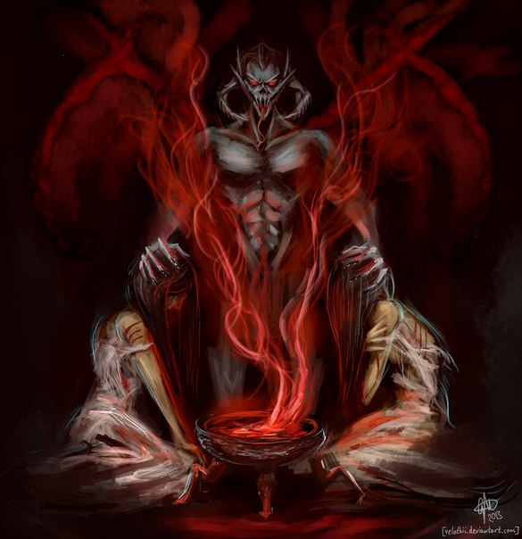

Ану и Падомай—это две непостижимые изначальные сущности, стоявшие в основе существования всего мира и Эт'ада. Вся нижеприведённая информация является легендами, и может не быть буквальным изложением происходивших событий.
Согласно легенде, описанной в книге «Детский Ануад», Ану и Падомай — братья, создавшие первозданный Аурбис. Согласно этой легенде, пока Ану и Падомай бродили в пустоте, игра Света и Тьмы создала Нир. Нир полюбила Ану, и Падомай с горечью в сердце оставил их. Нир забеременела, но вернулся Падомай и открыто признался Нир в любви. Она сказала ему, что любит только Ану, и в ярости Падомай избил её. Ану сразился с Падомаем и изгнал его за пределы Времени. Нир родила двенадцать миров, но вскоре умерла от ран. Ану, горюя, пожелал уединиться, забрался на солнце и заснул. Спустя много веков Падомай сумел вернуться во Время и, увидев Мироздание, возненавидел его и попытался уничтожить. Проснулся Ану и вновь вступил в схватку с Падомаем, победив его. Он отбросил тело Падомая, сочтя его мёртвым, и попытался спасти Мироздание, сотворив из остатков двенадцати миров один — Нирн. Пока Ану был занят этим, Падомай пронзил его грудь одним смертельным ударом. Ану схватил брата, и оба они исчезли за границами Времени. Из крови (может быть и не в буквальном смысле) Падомая произошли Даэдрические Принцы, в то время как кровь Ану превратилась в звёзды (Магне-Ге). Смешавшаяся кровь Падомая и Ану превратилась в Аэдра. В некоторых культурах Падомай почитается как его воплощение более низкого порядка — Ситис.
Эт'ада—изначальные духи, возникшие из крови первоначальных сущностей Ану и Падомая (порядок и хаос). По сути своей почти все эт'Ада являются богами-потомками обоих первобогов. Эт'Ада, сочетающие в себе частицы и Ану, и Падомая, участвовали в сотворении мира и стали называться аэдра. Чистокровные потомки Падомая отказались вкладывать часть своей силы в создание нового мира, и теперь они зовутся даэдра. Чистокровные потомки Ану стали звёздами (Магне-Ге).
Аурбис—это вселенная. Изначально существовали только Ану и Падомай, при столкновении (слиянии, соединении) которых появился Аурбис—олицетворение мистического столкновения порядка и хаоса, воплощённого в них. Потом в Аурбисе появились планы бытия и богов, сами боги, космос.
Космос делится на три основные части:
- Этериус—план Аэдра и душ большинства умерших, в нём же находится Совнгард;
- Обливион—совокупность Пустоты и планов Даэдра;
- Нирн—план смертных.
Совнгард является посмертной обителью нордов, созданной Шором. Те воины, которые доказали свою храбрость на поле боя, после смерти попадают в Совнгард. Все болезни, раны (как душевные, так и физические) исчезают при входе в Зал доблести. Духи нордов тут веселятся, пьют мёд, едят мясо и устраивают поединки ради развлечения. К сожалению (а для некоторых, может быть, и к счастью), те умершие, что при жизни были оборотнями, не попадают в Совнгард. Их забирает к себе Хирсин для вечной гонки в Великой Охоте. Также в Совнгард не попадают вампиры и даэдрапоклонники.
Шор—бог Подземного Мира, нордская версия Лорхана, который принял сторону людей после сотворения мира.
Талос—также Тайбер Септим, величайший Бог-герой всего человечества, которому поклоняются как защитнику и покровителю власти как таковой и гражданского общества. Тайбер Септим покорил весь Тамриэль и возвестил Третью Эру и Третью Империю. К моменту смерти он вознёсся как Бог войны и Власти, а поклонение Восьми Божествам(Главным аэдра) было реформировано в Девять Божеств (после этого их иногда стали называть «Восемь и Один»). Вопреки распространённому среди некоторых игроков заблуждению, Талос — не Аэдра, хоть и равен им.

Аэдра—это божественные существа из мира The Elder Scrolls, участвовавшие в сотворении Нирна, плана смертных. В религии противопоставляются Даэдрическим Принцам, хотя не являются их полной противоположностью. Слово используется для обозначения и единственного, и множественного числа. Допустимо употребление как с прописной, так и со строчной буквы. «Аэдра» — альдмерское слово, означающее примерно «наши предки».
- Акатош—известен также под другими именами: Ауриэль, Великий Дракон Времени. Когда-то давно, на рассвете Империи Тамриэль, подарил людям Амулет Королей — могущественный артефакт, позволяющий держать барьер между Нирном и Обливионом. Этот амулет содержит в себе кровь Великого Дракона,
и носить его могут те, кто является носителем этой крови — драконорождённые. Сам барьер поддерживался огнём в Храме Единого в Имперском городе. Единым, по представлениям Алессианского ордена, зовётся объединённое множество различных аспектов Акатоша (Алдуин, Тош-Рака, Алкош и другие).
- Аркей—Бог Цикла Жизни и Смерти—божество, связанное с похоронами и погребальными обрядами и ответственное за наступление времён года. Его последователи—стойкие противники некромантии и всех форм нежити. Аркей упоминается и в исконных пантеонах отдельных провинций Тамриэля. В этих культурах Аркей особенно популярен там, где его отец, Акатош, меньше связан со временем, или его временной аспект труден для мирского восприятия. Его иногда зовут Богом Смертных.
- Дибелла—Богиня Красоты. В Сиродиле, у неё почти дюжина разных культов, некоторые посвящены женщинам, некоторые — художникам и эстетике, остальные — эротическому наставлению. Дибелла говорит: Откройте своё сердце благородным секретам искусства и любви. Цените дары дружбы. Стремитесь к радости и вдохновению в любовных обрядах. Символ Дибеллы — лилия.

- Зенитар—Бог ремесленничества и торговли. Связывается с богом З'еном. В Империи, однако, он гораздо более культурный бог торговцев и среднего дворянства. Его адепты говорят, что, несмотря на его таинственное происхождение, Зенитар — бог, который всегда выигрывает.
- Кинарет—Богиня Воздуха — божество небес, ветров и невидимых духов воздуха. Являясь покровителем моряков и путешественников, Кинарет управляет благоприятными звёздами при рождении и фортуной в каждодневной жизни. В некоторых легендах, она первая согласилась с планом Лорхана создать измерение смертных, и обеспечила место в пустоте для его создания. Она также связывается с дождём — феноменом, которого, как говорят, не существовало, пока Лорхан не утратил искру божественной сущности.
- Мара—Богиня Любви—это Мать-Богиня, покровительница плодородной земли и источник понимания и сочувствия к смертным. В зависимости от религии, она либо жена Акатоша или Лорхана, или наложница их обоих.

- Стендарр—Бог Справедливости и Милосердия — покровитель праведности и снисходительности. Он вдохновляет судей и правителей, покровительствует Имперским Легионам и успокаивает законопослушных граждан. Стендарр вышел из северян, став божеством сочувствия, или, иногда, царствия по праву. Он, как говорят, сопровождал Тайбера Септима в его последние годы. В ранних легендах альтмеров Стендарр — защитник людей.
- Юлианос—Иначе — Джулианос. Бог Логики и Мудрости—божество литературы, закона, истории, чар и алхимии. Монашеский орден, основанный Тайбером Септимом и служащий Юлианосу, является хранителем Древних свитков. Его жрецы Культа Священного Шелкопряда содержат в Башне Белого Золота Древние свитки(свитки, содержащие в себе пророчества аэдра)—могущественные предметы, на которых записаны все прошлые и будущие события в Нирне.
- Аркей—Бог Цикла Жизни и Смерти—божество, связанное с похоронами и погребальными обрядами и ответственное за наступление времён года. Его последователи—стойкие противники некромантии и всех форм нежити. Аркей упоминается и в исконных пантеонах отдельных провинций Тамриэля. В этих культурах Аркей особенно популярен там, где его отец, Акатош, меньше связан со временем, или его временной аспект труден для мирского восприятия. Его иногда зовут Богом Смертных.
Другие Аэдра:
- И'ффре—самое важное божество Пантеона босмеров. В то время как Аури-Эль, Дракон Времени, является королём богов, босмеры почитают И'ффре как бога «настоящего». Как говорят, после создания плана смертных всё было в хаосе. Первые смертные превращались в животных, в растения и обратно.
Тогда И'ффре превратил себя в первого из эльнофей(это древнейшая мифическая раса, появившаяся сразу после сотворения Смертного Плана. Являются предками всех меров) «Кости Земли». Когда первые законы были установлены, смертные получили видимость безопасности в новом мире. И'ффре иногда именуется «Рассказчиком» за уроки, которые он преподал босмерам.
- Лорхан—Лорхан носит признаки и Даэдра, и Аэдра, поэтому формально не может считаться ни тем, ни другим (либо с таким же правом считаться и тем, и другим). Мёртвый Бог, иногда ещё называется Потерянным Богом. Лорхан был наказан другими Аэдра за то, что вынудил их создать Нирн и распрощаться с бессмертием. Согласно легенде, он собрал людские армии на войну с альдмерами (которых возглавлял Аури-Эль). Но Тринимак, величайший рыцарь Аури-Эля, победил Лорхана на глазах у его армии и вынул его Сердце. Тот был уничтожен. Люди поклялись мстить потомкам Аури-Эля во все времена. Но когда Тринимак и Ауриэль попытались уничтожить Сердце Лорхана, оно рассмеялось над ними. Оно сказало, «Это Сердце—Сердце Мира, потому что было создано для того, чтобы удовлетворить остальных». Тогда Ауриэль прикрепил сердце к стреле и запустил стрелу далеко в море, где её не сможет найти ни один аспект нового мира. И там, где сердце коснулось морского дна, появился огромный вулкан, который через столетия назовут «Красная гора», а вокруг него образовался вулканический остров, что ныне несёт имя «Вварденфелл».
- Магнус—Магнус является Аэдра магии. Его олицетворение—солнце, огромная дыра в Этериус, которая посылает в Нирн магию и солнечный свет.
Даэдра—сущности, подобные демонам, обитающие в Обливионе. В журнале «Лучшие компьютерные игры» демонология TES была названа самой развитой среди компьютерных игр, а даэдра сравнили с иудейскими демонами — «обычно злокозненными, но порой благодетельными». Старших даэдра, наиболее могущественных, называют Даэдрическими Принцами, их насчитывают обычно шестнадцать, иногда семнадцать (включая в их число Джиггалага). Принцы Даэдра обычно считаются богами. В игровой книге «Мономиф» указано, что все младшие даэдра были созданы Принцами. Там же рассказывается, что даэдра появились из крови Падомая (злое начало). Они принадлежат к эт’Ада, наряду с Аэдра. Не уточняется, относится это ко всем даэдра или только к Принцам. Даэдра бессмертны, их практически невозможно убить.
Даэдрический алфавит
Даэдрические Принцы или Князья Даэдра—могущественные повелители-даэдра, их можно назвать и богами. Часто Принцев называют Лордами Даэдра, что вносит некую путаницу — так же называют некоторых младших даэдра. Корректное альтернативное название Принцев — Даэдрические Лорды.
Принцы Даэдра правят каждый своим планом Обливиона. Обычно насчитывают шестнадцать Даэдрических Принцев (обладающих женским началом тоже называют Принцами, иногда Принцессами).
Даэдрические Лорды:
- Боэтия—Принцесса Интриг. её сфера—обман и тайные сговоры, планы убийств, покушений, предательства и свержения власти. Традиционное изображение Боэтии—воин с огромной секирой в руке (так же встречается и изображение с мечом).
- Хирсин—Отец оборотней, даэдрический Принц Охоты. Его сфера—охота, спорт, Великая Игра, погоня. Традиционное изображение Хирсина — оленеглавый мужчина с волком на привязи.

- Малакат—один из Принцев Даэдра, Бог Проклятий, Орочий Бог, Принц Изгоев. Согласно распространённым слухам, Малакат является не настоящим Принцем Даэдра. Когда-то он был Тринимаком(альдмерским эт’Ада),но был превращён Боэтией в даэдра. Его сфера—покровительство изгнанников и презираемых, он хранитель Верных Клятв и Кровавых Проклятий. Орки называют Малаката Малаухом, данмеры—Малаком, норды—Орк, или Старый Ворчун. Малаката изображают в виде полуобнажённого воина с человеческим или орочьим лицом, с мечом в одной или обеих руках.
- Мерунес Дагон—Даэдрический Принц Разрушения. Его сфера—уничтожение, разрушение, революция, сила и огонь. Часто ассоциируется с пожарами, землетрясениями и другими подобными природными явлениями. Традиционное изображение Дагона — четырёхрукий великан с рогами на голове, вооруженный двулезвийной секирой и сюко.(так называлось оружие из арсенала тайного оружия ниндзя, представлявшее собой крепившиеся на руки шипы или когти.)
- Шеогорат—один из принцев даэдра, известный также, как Князь Безумия, Безумный, Безумная Звезда, Безумный Бог, Безумный Лорд, чья сфер—безумие и чьи мотивы неизвестны. Считается, что он был «рождён», когда Лорхан утратил божественную искру. Шеогората изображают в виде бородатого мужчины в необычных одеждах и с тростью в левой руке.

Шеогорат — вторая сторона личности Джиггалага, даэдрического принца Порядка. Джиггалаг — самый могущественный даэдра из всех, включая Мерунеса Дагона, и (по легенде) другие даэдра, испугавшись силы Джиггалага, прокляли его безумием и он стал известен как Шеогорат, чьей сферой и стало безумие.
- Молаг Бал—Бог Интриг, Король Насилия, Принц Гнева, Отец Чудовищ, Повелитель Бед, Господин рабов. Его имя, Молаг Бал, переводится как «Горящий Камень». Его сфера—господство над смертными и порабощение их разума. Более всего Молаг Бал жаждет пожинать души, переносить их в пределы своего влияния, разбрасывая семена споров и раздора в сфере смертных. Один из самых ужасных даэдра. Расчётлив, использует для изъявления своей ярости других даэдра. Всегда пытается пресечь роды Домов или, по крайней мере, нарушить «чистоту» данмеров. Он ценит предательство. Данмеры называют этого Принца Даэдра создателем вампиров.

- Намира—Принцесса Даэдра, её сфера—Древняя Тьма. Намира повелевает духами тьмы и теней; ассоциируется с пауками, слизнями и другими существами, которые вызывают у смертных отвращение. Известно, что Намире приятно всякое уродство. Ее изображают женщиной в роскошном платье, без атрибутов, с сидящим у ног бесом.

- Мефала—Принц Даэдра, двуполое божество. Её сфера—секреты, убийства, но главное—искусство, искусство убийства в том числе (по некоторым источникам, её истинная сфера неизвестна смертным). Мефалу изображают как четырёхрукое божество, в платье, с ожерельем из черепов и высокой причёской.

- Клавикус Вайл—Принц Даэдра, исполнитель желаний. Его сфера—дарование сил, исполнение желаний смертных и создание договоров. Клавикус Вайл опасен, так как воздействует на волю смертных. Его изображают в виде рогатого карлика, сопровождаемого огромным псом.
- Ноктюрнал—Принцесса Даэдра, известная как Императрица теней, Дочь сумрака, Ноктюрнал-непостижимая, Повелительница ночи, Хозяйка Тайны и Святая подозрений, чья сфера—Ночь и Тьма. Ноктюрнал изображают в виде женщины в тёмной мантии с двумя ночными птицами на разведённых в стороны руках.
- Периайт—один из Принцев Даэдра, чья сфера — наведение порядка в низших слоях Обливиона (отсюда его прозвище—«Надсмотрщик»). По этой причине Периайт является не столь популярным даэдра. Он может вызывать заболевания и эпидемии. Считается слабейшим из всех Принцев Даэдра. Периайта изображают в виде крылатого дракона.

- Азура—Даэдрическая принцесса, чья сфера заря и закат, магия междуцарствия сумерек. Она также известна, как Лунная Тень, Мать Розы и Королева Ночного Неба. Традиционное изображение Азуры—полуобнажённая женщина (или женщина в красивом платье), с луной и звездой в руках.
- Меридия—Принцесса Даэдра, её сфера смертным неизвестна, но понятно, что она связана с живыми существами. Меридия ненавидит некромантию и нежить.Эту Принцессу Даэдра изображают молодой прекрасной женщиной в платье.
- Хермеус Мора—Даэдрический Принц Непознанного. Его сфера—прорицание судьбы, чтение небес и звёзд, накопление запретных знаний.Он один из наиболее таинственных и скрытных Даэдрических Принцев, которые когда-то проявили себя в мире смертных. Смертный, который, по его мнению, недостоин, никогда не получит ответа, какими бы способами он ни старался его вызвать. Однако, если кто-либо заинтересует его, к избранному придут верные Море последователи, которые и сообщат смертному о желании их хозяина поговорить с ним. Традиционное изображение Хермеуса Моры—странное бесформенное существо с щупальцами и четырьмя воздетыми клешнями. Ещё одной известной его формой можно считать «Отвратительную Бездну», также иногда он появляется в форме облака щупалец с большим оком в центре, окружённым множеством глаз.

- Сангвин—Даэдрический Принц, его сфера—пирушки и радость, а также стремление к тёмным сторонам натуры—разврату и пьянству. Сангвина изображают в виде тучного рогатого демона в тунике, с кружкой в руке, попирающим ногой череп, олицетворяющий видимо скуку, смерть, тоску, уныние.
- Вермина—один из Принцев Даэдра, чья сфера—сны, ночные кошмары, пытки и дурные предзнаменования. Вермину чаще всего изображают в виде женщины в роскошном платье и с посохом в руке.
- Хирсин—Отец оборотней, даэдрический Принц Охоты. Его сфера—охота, спорт, Великая Игра, погоня. Традиционное изображение Хирсина — оленеглавый мужчина с волком на привязи.

Вернуться на главную страницу